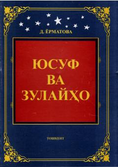

YVYusuf va Zulayhoning abadiy sevgi qissasi nasriy tarzda yangicha talqin etilgan.
Bu kitob Dilorom Yermatova tomonidan Yusuf va Zulayhoning mashhur sevgi dostonini nasriy tarzda bayon etgan asar bo'lib, 2014-yilda 'Navro'z' nashriyotida chop etilgan. Muallif Abdurrahmon Jomiy va Ramz Bobojon asarlaridan ilhomlanib, o'ziga xos tasvirlar va tabiat tasviri orqali bu buyuk muhabbat qissasini yangicha talqin etgan. Asar maktab, litsey, kollej va oliy ta'lim muassasalari talabalari uchun o'quv adabiyoti sifatida ham tavsiya etilgan.